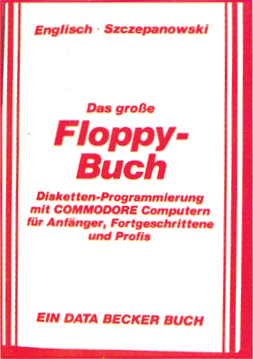
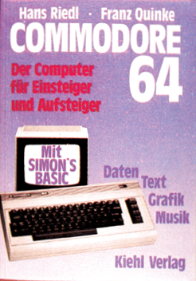
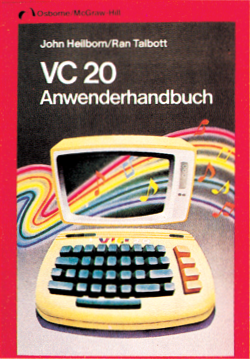
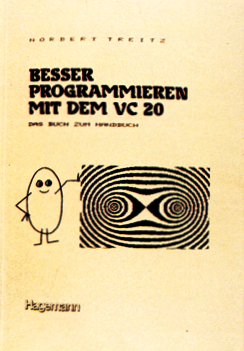

Bücher
Das große Floppy-Buch
Bei dem großen Floppy-Buch handelt es sich um genau 326 Seiten geballte Information über die VC 1541-Floppy von Commodore. Diese Diskettenstation wurde speziell für die Homecomputer im Sinne von Problembeschreibung, VC 20 und Commodore 64 entwickelt. Der schon etwas fortgeschrittene Anwender, der seine VC 1541-Einheit intensiver als nur zum Abspeichern von Programmen nutzen will, erfährt durch das Originalhandbuch leider nur recht wenig Unterstützung. Das große Floppy-Buch deckt hier also einen echten Bedarf.
Neben der Beschreibung aller Floppy-Systembefehle zum Filehandling werden in zwei ausführlichen Kapiteln die Konzepte der sequentiellen und der relativen Datenspeicherung erläutert. Ein Abschnitt über »Programmierung für Fortgeschrittene« zeigt Möglichkeiten zum direkten Zugriff auf einzelne Sektoren einer Diskette und auf das Betriebssystem (DOS) der Diskettenstation.
Natürlich wird auch der technische Aufbau und die interne Verwaltung einer Floppy-Station beschrieben.
Neben einer Unzahl von kleineren Beispielprogrammen findet man unter anderem auch eine komplette Adreßverwaltung, ein Disketten-Kopierprogramm und einen Disk-Monitor. Ein vollständiges, kommentiertes Disassemblerlisting des DOS 2.6 und eine Vielzahl nützlicher Tips und Tricks für das Arbeiten mit diesem DOS runden das große Floppy-Buch ab, das infolge der durchweg leicht verständlichen Darstellungsweise nicht nur für den Profi interessant erscheint.
(ev)Englisch/Szczepanowski: Das große Floppy-Buch, 326 Seiten, Data Becker GmbH, Düsseldorf 1983, 49 Mark.
Commodore 64 Der Computer für Einsteiger und Aufsteiger
Das Buch wendet sich an den absoluten Computerneuling, dem Begriffe wie »Datenverarbeitung« und »Programmierung« wenig oder gar nichts sagen und der sich mit seinem neuen Commodore 64 auch nur auf der Ebene der Anwenderprogrammierung (also ohne weitere Kenntnisse über Bits, Bytes oder Speicheradressen) beschäftigen will.
Wer also ein tiefergehendes Verständnis des C 64 sucht oder sich Tips und Tricks für die Programmierung (oder gar Tabellen spezieller POKEs und PEEKs) erhofft, dem kann dieses Buch nicht weiterhelfen.
Dem Neuling jedoch wird das Programmieren von den Grundlagen herbeigebracht, und zwar Programmierung richtig verstanden im Sinne von Problembeschreibung, Analyse, Finden eines Algorithmus und schließlich Codierung desselben in einer Programmiersprache, zum Beispiel in Basic. Nach Einübung dieser Vorgehensweise anhand einiger kleiner Beispiele wird schließlich die Spracherweiterung Simons Basic für den C 64 vorgestellt. Man erfährt hier einiges über die im Simons Basic enthaltenen Sprachelemente zur strukturierten Programmierung. Der Abschnitt über Unterprogrammtechnik im Simons Basic ist dabei ermüdend lang geraten. Über volle 6 Seiten wird an trivialen Beispielen im wesentlichen vorgeführt, daß ein Unterprogramm immer wieder ins Hauptprogramm zurückkehrt. Aber dazu braucht man wirklich kein Simons Basic, das funktioniert genauso mit GOSUB.
Insgesamt gesehen bleibt der Teil des Buches, der sich mit dem Simons Basic und strukturierter Programmierung befaßt, leider nur Stückwerk. Dieser Abschnitt kann höchstens einen ersten, flüchtigen Einblick darstellen. Unbefriedigend ist natürlich auch, daß der Anwender, der nicht über Simons Basic verfügt, hier völlig allein gelassen wird. Immerhin gäbe es ja auch über strukturierte Programmierung im Standard-Basic einiges zu sagen. Der erste Teil des Buches ist demgegenüber als Programmierlehrgang für Anfänger recht gut gelungen — aber wirklich nur für Anfänger.
(ev)Hans Riedel / Franz Quinke: Commodore 64, 160Seiten, Friedrich Kiehl Verlag 1983, ISBN 3-470-80421-6, 49,80 Mark.
VC 20-Anwenderhandbuch
Endlich ein Buch über den VC 20, das gleichermaßen den Anfänger wie den fortgeschrittenen Anwender anspricht. Neben einer ausführlichen und leicht verständlichen Einführung in die Basie-Programmierung findet der Anfänger hier auch eine Fülle von Tips und Tricks, um die Hard- und Softwareeigenschaften des VC 20 optimal für eigene Programme zu nutzen. Ein ganzes Kapitel beschäftigt sich mit den Möglichkeiten zur Steuerung von Spielen mittels Joystick, Paddle oder Tastatur. Ein anderer Abschnitt beschreibt Entwurf und Realisierung benutzerfreundlicher Inputroutinen.
Ist man mit den Grundlagen seines VC 20 einigermaßen vertraut, dann bieten die Kapitel über die Erzeugung von Grafiken und Tönen einen tieferen Einblick in das Innenleben des Volkscomputers. Erklärt und anhand von Beispielprogrammen demonstriert werden die Erzeugung selbstdefinierter Zeichen und — als Anwendung hiervon — die Programmierung der hochauflösenden Grafik und des Vielfarben-Modus. Sehr ausführlich dargestellt ist auch die Realisierung spezieller Toneffekte wie Schwebungen, Vibrato oder Tremolo. Bemerkenswert ist die recht umfangreiche Behandlung der wichtigsten Peripheriegeräte. Der Bogen spannt sich hier vom Farbbandwechsel beim VC 1515-Grafikdrucker bis zum Direktzugriff auf einzelne Sektoren bei der 1540-Floppy.
Zahlreiche Tabellen, Diagramme und Fotos tragen einiges zum guten Verständnis des dargebotenen Stoffes bei. Ein umfangreicher Anhang enthält die Speicherbelegung des VC 20, die Funktionen des 6560-Video-Chips, alle Basic-Statements und Funktionen (auch für Diskettenbetrieb) und andere Tabellen.
Nach näheren Informationen über die verschiedenen Speicher- und Spracherweiterungsmodule sucht man im VC 20-Anwenderhandbuch jedoch vergebens. Ebenfalls nicht behandelt wird der Zugriff auf die Maschinenebene.
Einige sprachliche Ungereimtheiten sind vermutlich auf die Übersetzung aus dem Amerikanischen zurückzuführen. So ist zum Beispiel die Rede von »weichen Sektoren« auf einer Diskette (gemeint sind durch Software erzeugte Sektoren) und zum SYS-Befehl findet man als Erklärung: »übergibt an ein Subsystem« (was immer das sein mag).
Alles in allem handelt es sich bei dem Buch jedoch um eine recht gute Einführung für den Anfänger, aber auch der fortgeschrittene Benutzer wird hier wahrscheinlich noch einiges an neuem Wissen finden. In jedem Fall ist das Buch als umfangreiches Nachschlagewerk zum VC 20-System zu empfehlen.
(ev)John Heilborn / Ran Talbott: VC 20 Anwenderhandbuch, 388 Seiten, McGraw-HiII Book Company, Hamburg 1983, lSBN 3-89028-004-8, 32,- Mark.
Commodore 64-Programmieren leicht gemacht
Dieses Buch ist gedacht für den Neuling, der sich einen Commodore 64 gekauft hat oder kaufen möchte. Für erfahrene Aufsteiger, die von einem anderen Gerät kommen, sollte es ebenfalls von Nutzen sein. Das von den Autoren gesteckte Ziel ist klar; es geht darum, in verständlicher Form die Haupteigenschaften des Commodore 64 und seiner Programmiersprache Basic zu beschreiben. Das Buch umfaßt eine große Zahl Programmbeispiele, von Testroutinen für neue Befehle bis hin zu längeren Programmen für Spiele, interessante Grafikdisplays, Umgang mit Daten auf Tonbandkassetten, Musik und Spritesteuerung. Die meisten Kapitel enthalten eine oder mehrere Aufgaben, die Ihre Fortschritte prüfen und zusätzliche Vorschläge liefern. Am Ende des jeweiligen Kapitels stehen die Lösungen der Aufgaben und können damit als Zusatzinformation genutzt werden. Eine wichtige (und ziemlich ungewöhnliche) Eigenschaft dieses Buches sind mehrere Kapitel über Debugging (Fehlersuche): Wie man dahinterkommt, warum ein Programm nicht läuft, und den Fehler behebt. Jeder, der selber Programme schreibt, wird diese Kapitel als besonders nützlich empfinden. Es werden auch ein paar Empfehlungen für das Verfassen gut strukturierter Programme — vor allem für die sinnvolle Nutzung von Unterprogrammen — gegeben, um das Programm in überschaubare Blöcke aufzuteilen. Ein Beispiel dazu habe ich in dem Artikel »Strukturiertes Programmieren« in dieser Ausgabe verwendet. Dieses Buch befaßt sich nicht mit allen Möglichkeiten des Commodore 64. Zum Beispiel wird der Umgang und die Arbeit mit dem Diskettenlaufwerk nicht behandelt, wohl aber, wie man Daten auf Kassette unterbringt. Ich sehe dieses Buch aber für den Anfänger als nützlich an. Es hilft dem Computer- und Commodore-Neuling sicher und oft auch in einer humorvollen Weise auf die Beine. Ich kann es deshalb empfehlen.
(gk)Ian Stewart, Robin Jones: Commodore 64 — Programmieren leicht gemacht, 264 Seiten, Birkhäuser 1984, ISBN 3-7643-1588-1, Preis 49 Mark.
Besser programmieren mit dem VC 20
Das »Buch zum Handbuch«, wie es im Untertitel genannt wird, wendet sich in erster Linie an den Computerneuling und will diesem über das Handbuch hinausgehende Hilfestellung bei der Programmierung seines Volkscomputers geben.
Thematisch gibt es drei Schwerpunkte: Das VC 20-Basic, die hochauflösende Grafik und Anregungen für die Erstellung eigener Software, hauptsächlich aus den Bereichen Grafik, Spiele und (naturwissenschaftliche) Simulationen. Die Vorschläge gehen jedoch kaum über das Niveau reiner Programmierübungen hinaus (Quiz, Nimm, Fibonacci-Zahlen, Tapetenmuster und so weiter).
Recht informativ ist der Abschnitt über die Realisierung von hochauflösenden Grafiken mit oder ohne Super-Expander, interessant auch die mit kleinen Beispielprogrammen beschriebenen Tricks, um Grafiken auf Band oder Disk zu retten oder als Hardcopy auf einem VC 1525-Drucker auszugeben.
Leider wirkt die Darstellung streckenweise etwas konfus und unübersichtlich. So erfährt der staunende Leser zum Beispiel, daß die Wertzuweisung mittels Gleichheitszeichen »zu den größten Handicaps von Basic« gehört oder daß der Computer als Ergebnis eines logischen Vergleichs A=B den Wert —1 liefert, »wenn über A und B noch nichts bekannt ist«. Speziell bei den Abschnitten über die hochauflösende Grafik wäre auch eine ausführlichere und systematischere Darstellung angebracht. Die Ausführungen über das VC 20-Basic gehen kaum über die des Handbuchs hinaus.
Fazit: Für den Profi bietet das Buch zuwenig, für den Neuling erscheint es jedoch trotz einiger Mängel in der Darstellung dann geeignet, wenn er sich für den Einsatz des VC 20 im Bereich Schule/Ausbildung interessiert.
(ev)Dr. Norbert Treitz: Besser programmieren mit dem VC 20, 186 Seiten, Lehrmittelverlag W. Hagemann 1983, ISBN 3-544-53001-0, 18,30 Mark.